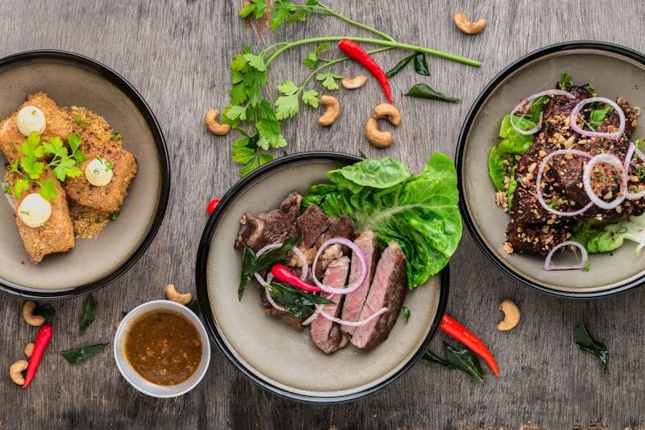

À la une
Pourquoi le prix des œufs explose en 2026 : tout ce qu'il faut savoir
La grippe aviaire et les nouvelles réglementations sur le bien-être animal font grimper les prix. On vous explique tout et on vous donne nos astuces pour adapter vos recettes.
Lire l'article